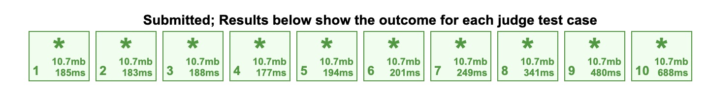
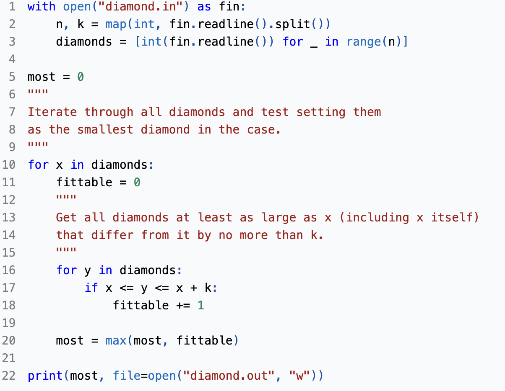
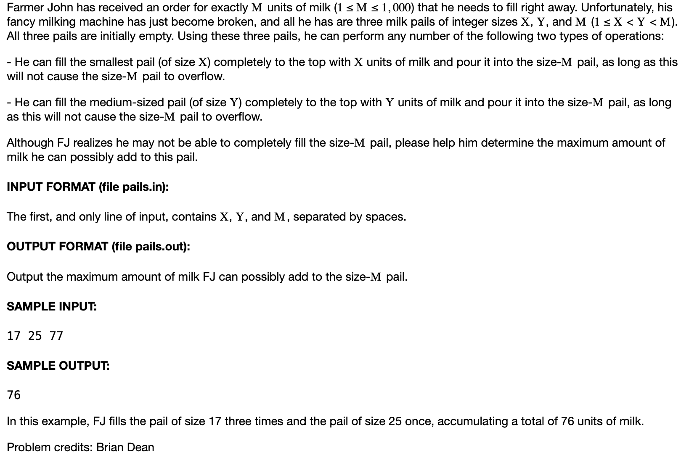
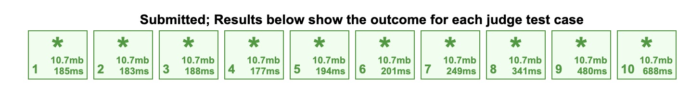
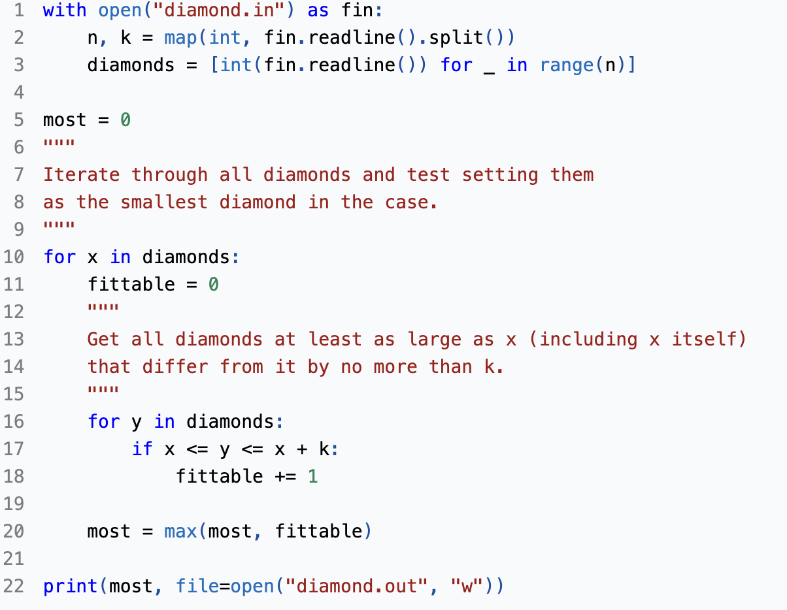
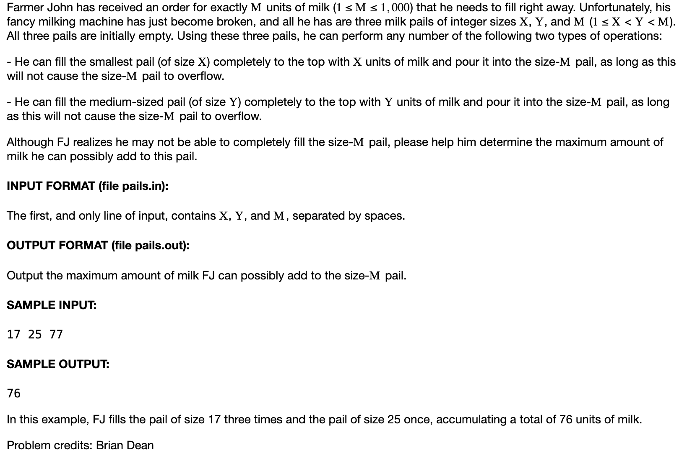

USA Computing Olympiad:
Description: In my freshman year at CU Boulder I took a class called Computational Foundations 2. In this class we would solve problems from the USA Computing Olympiad. It taught me problem solving, analytical skills, and
Tools used: Python via VS Code, ChatGPT to check my comments and help when stuck
Weekly Problems:
USACO 2016 US Open Contest, Bronze Problem 1. Diamond Collector
USACO 2016 February Contest, Bronze Problem 1. Milk Pails
USACO 2017 January Contest, Bronze Problem 1. Don't Be Last!
USACO 2017 January Contest, Bronze Problem 1. Don't Be Last!
USACO 2017 February Contest, Bronze Problem 3. Why Did the Cow Cross the Road III
USACO 2019 February Contest, Silver Problem 2. Painting the Barn
USACO 2016 January Contest, Silver Problem 2. Subsequences Summing to Sevens
USACO 2017 February Contest, Silver Problem 2. Why Did the Cow Cross the Road II
USACO 2016 January Contest, Silver Problem 1. Angry Cows
USACO 2015 December Contest, Silver Problem 2. High Card Wins
USACO 2017 US Open Contest, Silver Problem 1. Paired Up
USACO 2016 US Open Contest, Silver Problem 3. Closing the Farm
USACO 2019 January Contest, Silver Problem 2. Icy Perimeter
USACO 2016 December Contest, Silver Problem 3. Moocast
USACO 2017 December Contest, Silver Problem 3. The Bovine Shuffle
USACO 2019 December Contest, Silver Problem 3. Milk Visits
AtCoder Beginner Contest - Div Game
USACO 2015 December Contest, Gold Problem 2. Fruit Feast
USACO 2018 December Contest, Gold Problem 3. Teamwork
USACO 2016 US Open Contest, Gold Problem 2. Closing the Farm
Final Problems:
USACO 2023 January Contest, Bronze Problem 2. Air Cownditioning II
USACO 2018 January Contest, Bronze Problem 1. Blocked Billboard II
USACO 2016 December Contest, Bronze Problem 2. Block Game
USACO 2021 February Contest, Bronze Problem 1. Year of the Cow
USACO 2020 January Contest, Silver Problem 1. Berry Picking
USACO 2020 December Contest, Silver Problem 2. Rectangular Pasture
USACO 2015 December Contest, Silver Problem 1. Switching on the pghts
USACO 2020 January Contest, Silver Problem 3. Wormhole Sort
USACO 2019 February Contest, Gold Problem 2. Dishwashing
USACO 2019 February Contest, Gold Problem 3. Painting the Barn
 




